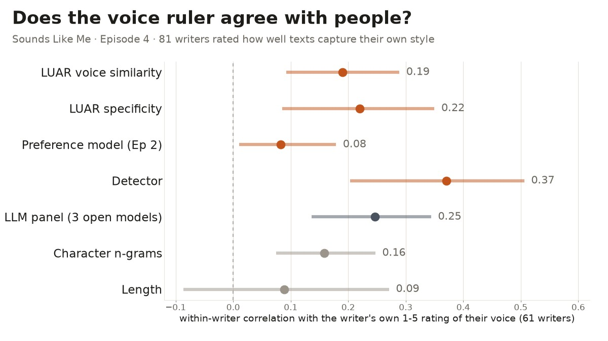
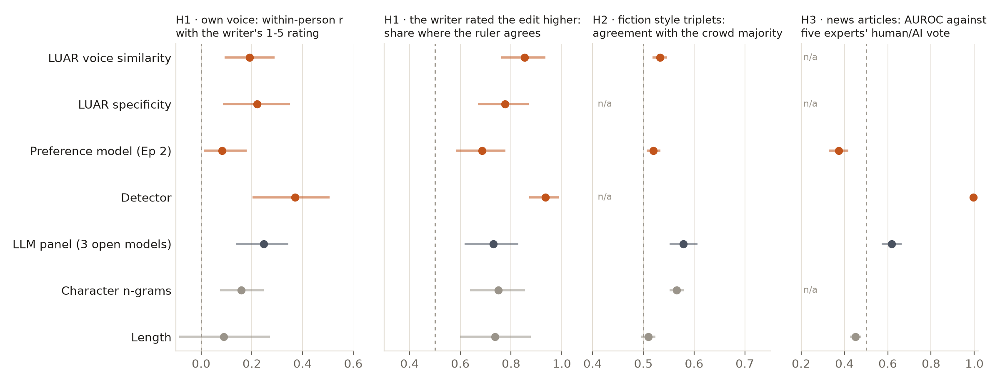
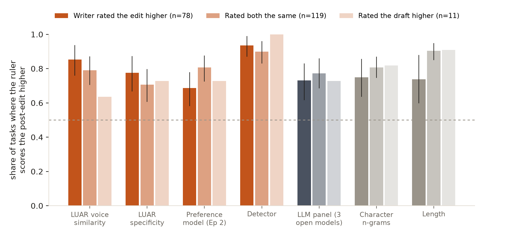
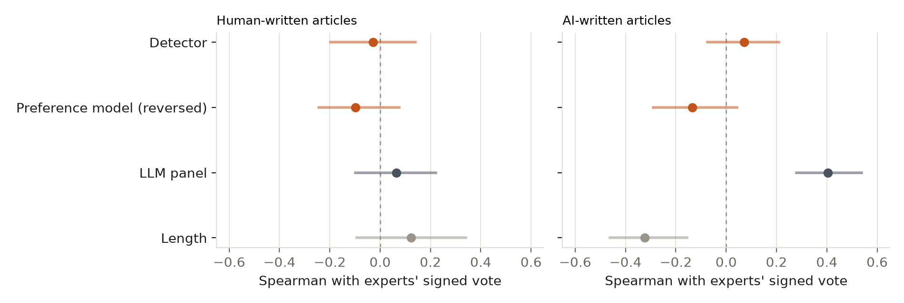
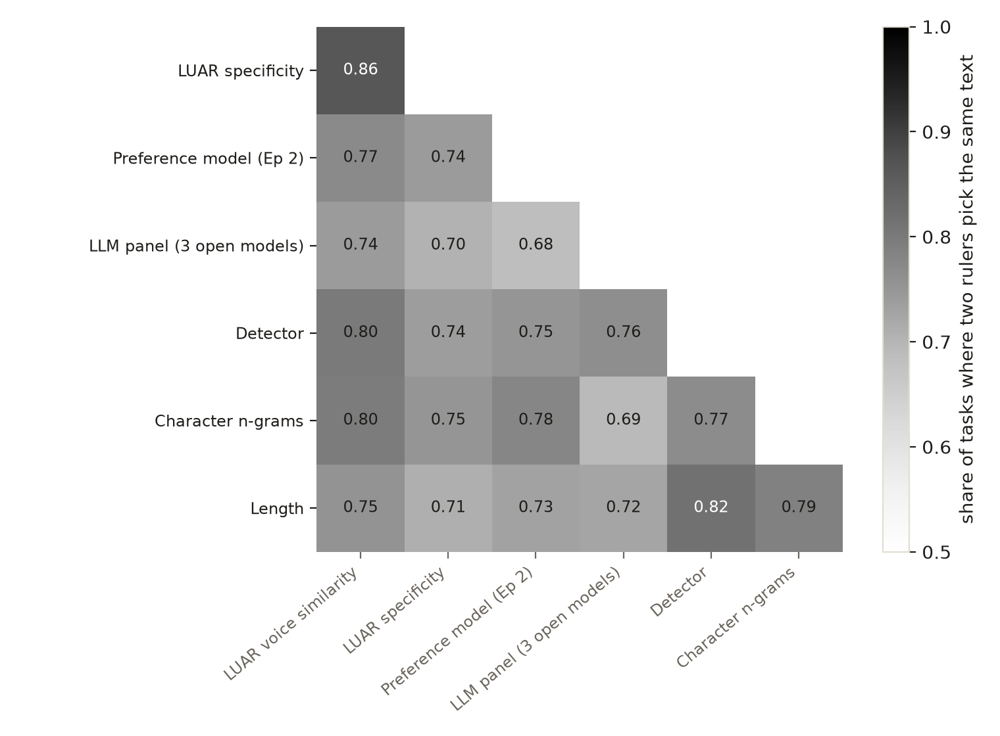

← Research·Sounds Like Me · RL for unverifiable writing·Experiments·
Does the voice ruler agree with people?
Reinforcement learning works when answers can be checked. Most writing can't be checked: there's no answer key for "sounds like me". This series builds a reward for authentic voice from public writers, tests it against every model, and then trains on it. This episode checks the reward against people.

results/summary.json.Summary: the short answer and the key results
In short
Do the rulers this series rewards and selects with agree with people's own sense of their voice?
Weakly, and partly for the wrong reason. Against 81 writers rating how well texts capture their own style, LUAR's similarity score correlated at 0.19 within each writer, close to the 0.24 the dataset's paper reported. It agreed with 85% of the writers' "my edit sounds more like me" judgements, but it also preferred the edit on 79% of the tasks where the writer rated both the same: much of what it rewards is "moved away from the AI draft". An off-the-shelf AI-text detector agreed with people's voice ratings more than LUAR did (0.37), and LUAR's agreement fell to 0.08 once AI-ness was held fixed. Episode 2's preference model barely agreed (0.08), and on news articles it scored AI-written text as more human than human text. On fiction triplets where strangers judged style, no ruler beat 0.58. The author's own blind ratings are collected separately and are pending.
Key results
| What we tested | Result | Compared with |
|---|---|---|
| Does LUAR track how much a text sounds like the writer, by the writer's own rating (P1)? | Weakly. Within-writer r = 0.19 [0.09, 0.29] on 61 held-out writers (488 texts); shuffled ratings reach 0.08 | The dataset's paper: 0.24 ± 0.08. Detector 0.37 [0.20, 0.51] |
| When the writer says the edit sounds more like them, does LUAR agree (P2)? | Yes, 0.85 [0.76, 0.94] of 78 tasks | But it also prefers the edit on 0.79 of the 119 tasks rated the same |
| Is that voice or "less AI"? | Mostly less AI. LUAR's within-writer r falls from 0.19 to 0.08 once the detector score is held fixed; the detector alone agrees on 0.94 of "edit is better" tasks | The LLM panel keeps 0.23 after the same control |
| Does the preference model track AI-ness more than voice (P3)? | No, it tracks neither well. Own voice r 0.08; on expert-labelled news it ranks AI articles as more human-like: AUROC 0.37 [0.33, 0.42] | Detector 0.995; LLM panel 0.62 |
| Do rulers agree with strangers' style judgements on fiction (P4)? | Barely. LUAR 0.53 on 4,995 triplets, 0.56 where 80% of judges agreed | Word overlap 0.62, Qwen3-32B 0.61 on the same high-agreement triplets |
| Is an LLM panel closer to people than LUAR (P5)? | Slightly, on own voice: 0.25 against 0.19 (difference +0.06, just over the +0.05 threshold). Two of three panel models failed a known-answer check | Llama-3.1-8B picked the first-listed passage 99.9% of the time |
| Does the author agree with LUAR on 150 blind pairs (P6)? | pending The rating set is frozen; the arm is scored as n = 1 when the ratings are in |
New to the series? Start with Episode 1: can any model sound like you? It builds the voice scale this episode tests.
01Introduction
A study participant writes a condolence note alone, then gets an AI draft of another personal note and edits it. In the study's examples, edits like this one change "an amazing spirit, one whose generosity knew no bounds" to "an amazing man". Asked how well each version captures their style, a participant might give the AI draft a 3 and the edit a 5. LUAR, the voice ruler this series uses to score and select drafts, tends to agree: the edit sits closer to their own notes. But so does a plain AI-text detector, which knows nothing about this person. And where a participant rated the draft and the edit equally, LUAR still preferred the edit four times out of five.
What is known. Episodes 1 and 2 measured "sounds like this person" with rulers: LUAR (an authorship model that turns texts into a style fingerprint), a specificity control (closer to this person than to others), a detector, and a small preference model. Each ruler passed a check with a known answer, such as telling two texts by the same writer from two by different writers. The published study behind this episode's first dataset found that LUAR's similarity and people's own ratings of their voice correlate weakly (r = 0.24).
What is missing. None of the series' rulers had been compared with a person's judgement of voice. Episode 2 found its preference model mostly rewarded "doesn't sound like AI", and Episode 3 trains a model against these rulers. If the rulers reward something people don't hear as their voice, training will optimise that instead.
What this note does. It scores every ruler against people, using judgements that published studies released, and sets up one blind annotator. An LLM judge is a comparison arm here, never a stand-in for people: using a model to check a model's reward would be circular.
- A measurement of how well four rulers, three baselines and an open-model LLM panel agree with three kinds of human judgement: a writer about their own voice, strangers about literary style, and experts about AI-written text.
- A test of why LUAR agrees where it does: much of it is "less like the AI draft".
- A negative result: Episode 2's preference model does not track people's voice ratings, and it reads AI-written news as more human than real news.
- A blind pairwise rating set (150 draft pairs + 10 repeats) for one annotator, scored in a later update.
02Setup
What counts as agreement. Fixed before any ruler ran:
- On a writer's own voice, a ruler's score for a text moves with that writer's rating of it, within each writer (a repeated-measures correlation, which removes writers who rate everything 5).
- When a writer rated one version higher, the ruler scores it higher too.
- On style judgements by strangers, a ruler picks the excerpt the majority picked.
- On AI-written text, a ruler's AI score separates what experts called AI from what they called human.
- Every number beats a permutation floor (the same metric with people's labels shuffled), and every judge first passes a check with a known answer.
The three released datasets (each paper released per-item human judgements; only numbers derived from them are shipped here, never their text):
| Id | What people judged | Held-out size | Licence |
|---|---|---|---|
| H1 own voice | 81 people each wrote two personal letters alone and post-edited AI drafts of others, then rated how well each text captures their style (1-5). Details were invented on purpose | 61 writers, 244 tasks | None stated; analysed locally |
| H2 literary style | Crowdworkers read an anchor excerpt from a novel and picked which of two other excerpts is closer in style (about 7 votes per triplet) | 4,995 triplets (2,359 with ≥ 80% agreement) | None stated; copyrighted excerpts |
| H3 AI-ness | Five annotators who use LLMs for writing labelled news articles human or AI, with confidence (1-5); half were AI, some paraphrased or "humanised" | 240 articles | MIT |
The rulers. A ruler is any score of "how much like this person" (or "how AI-like"). Each is oriented so that higher means more like the person.
| Ruler | What it computes | Everyday analogy |
|---|---|---|
| LUAR similarity | Cosine between a text's style fingerprint and the writer's reference texts (greetings and sign-offs stripped) | Comparing handwriting samples |
| LUAR specificity | Similarity to this writer minus the average similarity to everyone else's references | Closer to this person than to a random person |
| Detector | An off-the-shelf AI-text classifier (voi-slop-detect-380M), negated: less AI-like scores higher | A "does this sound like a chatbot?" meter |
| Preference model | Episode 2's small reward model (DeBERTa-v3-small) that compares a text to two reference texts; retrained with Episode 2's exact data and seed | A taste model trained on "own text beats other text" |
| LLM panel (comparison arm) | Three open models on rented GPUs rate "how well does this capture the person's style, 1-5" (or pick B or C, both orders); the score is the expected answer from the answer token's probabilities; the panel is the mean of the three after z-scoring | Asking three readers who are not people |
| Baselines | Character 3-gram and word overlap with the references; length | Do the texts share letters, words, length? |
03How the study was run
- Find the human signal. Searched for papers that released per-item judgements of style, voice, authorship or AI-ness, and checked each licence (11 candidates; 3 used; the most on-target one, expert style-fidelity votes on imitations of 50 authors, is no longer available from its authors and was not used).
- Write the plan with the success tests above, the predictions and the splits: H1 20 development writers and 61 held-out; H2 one corpus of books for development, two disjoint corpora held out; H3 6 of 30 article groups for development.
- Check every ruler on known answers (3.1).
- Tune on development items only: 4 tries, all LUAR settings (logged in results.tsv).
- Pilot: 20 items per dataset through every ruler, end to end ($0.76).
- Score held-out items once with every ruler: 6,058 panel prompts per model; the preference model on about 18,000 items.
- Freeze the blind pair set for the author (hash recorded before the page was built).
| Fixed before any trial | Changed after reading results |
|---|---|
| Datasets, splits, metrics, predictions, panel prompts, the panel's membership | The H1 known-answer check (3.1): the first version compared scores across different references, which a reward model can't do; rebuilt before the panel's full run |
| LUAR in strict form (the series' metric); loose form reported beside it | The breakdown by the writers' edit-type labels was dropped (the release does not say what the codes mean); edit size used instead |
| The pair set for the author (150 + 10 repeats, seeded) | The rating page ignores a held key, after its first browser check rated 160 pairs in a second |
| The panel's H3 question as "P(AI) 0-100" | Asked as a 1-5 digit like the other questions (one answer token); decided before the pilot |
Conditions: LUAR, the detector and the baselines on a laptop; the preference model and the panel on Modal H100s (vLLM, greedy, thinking off, one answer token, the top 20 log-probabilities). Spend: $2.83 of Modal compute; no paid API.
3.1 Every ruler was checked on known answers first; two panel models failed
| Ruler | Known-answer check | Result | Bar |
|---|---|---|---|
| LUAR | H1: a writer's own unassisted letter vs other writers', against their other letter | AUROC 0.95 dev / 0.91 held-out | ≥ 0.70, pass |
| LUAR | H2's built-in test triplets (two excerpts of one classic novel vs another) | 0.974 of 343 | reported |
| Preference model | Episode 2's held-out authorship pairs | 0.833 of 150 | ≥ 0.75, pass (Episode 2: 0.81-0.85) |
| Preference model | H1: own letter vs another writer's, same reference | 0.580 of 162 | none set; weak |
| Qwen3-32B | H1 own vs other / H2 test triplets right in both orders | 0.72 / 0.87 | ≥ 0.65 / ≥ 0.80, pass |
| Gemma-3-27B | same | 0.75 / 0.796 | pass / fail (just) |
| Llama-3.1-8B | same | 0.61 / 0.009 | fail / fail: it picked the first-listed passage 99.9% of the time |
The panel was registered as the mean of all three models, so the headline panel numbers include the two that failed a check; each model is also shown alone in Figure 1's selector. Swapping the passages' order is what exposed Llama: asked once, it would have looked like a judge with a strong opinion.
04Results
4.1 LUAR agrees weakly with writers about their own voice (P1)
Within each of the 61 held-out writers, the texts LUAR scored closer to their letters were, on average, the ones they rated as capturing their style: r = 0.19 [0.09, 0.29], against 0.08 for shuffled ratings and 0.24 in the dataset's paper (P1 hit). Specificity, which subtracts how close a text is to everyone else, did about the same (0.22). The ruler that agreed most was not a voice ruler: the detector, which never sees the writer, reached 0.37 [0.20, 0.51]. The LLM panel reached 0.25 (Qwen3-32B 0.25, Gemma 0.24, Llama 0.12); Episode 2's preference model 0.08 [0.01, 0.18]. Figure 1 shows every ruler on every dataset; pick a measure to redraw it.

4.2 Much of the agreement is "less like the AI draft" (P2)
When a writer rated their edit above the AI draft (78 tasks), LUAR scored the edit higher 85% of the time [0.76, 0.94] (P2 hit). Figure 2 shows why that number flatters it. On the 119 tasks where the writer changed the text but rated both versions the same, LUAR still preferred the edit 79% of the time. Every ruler does this, length included: an edit moves the text away from the model's draft, and the rulers credit the move whether or not the writer hears it as their voice. On the 11 tasks where writers preferred the draft, LUAR sided with them 4 times, the detector never. Two more checks point the same way. LUAR's hit rate grows with the size of the edit (0.73, 0.85 and 0.96 across thirds of edit size), and holding the detector score fixed cuts LUAR's within-writer correlation from 0.19 to 0.08 and the preference model's to 0.03. Holding length fixed instead barely moves LUAR (0.18), so the shared signal is AI-ness, not length. The LLM panel keeps 0.23 after the detector control, so it carries something besides AI-ness.

The writers' ratings are a soft target too. "Captures my style" moved with "I would use this" at r = 0.77 within writers, and the drafts were rated 5 out of 5 more than half the time (128 of 244), so part of what they rated is quality and the ceiling leaves little room.
4.3 The preference model reads AI-written news as more human than real news (P3)
Episode 2 found its preference model mostly rewarded "doesn't sound like AI", so the plan predicted it would agree with expert AI detectors more than with writers about voice (P3). It did neither. On 240 held-out news articles it gave AI-written ones higher "like a human writer" scores than human-written ones: AUROC 0.37 [0.33, 0.42], below chance. The detector separated them almost perfectly (0.995), as did the experts' majority (239 of 240). The LLM panel reached 0.62, Qwen3-32B alone 0.75. The preference model was trained on short emails; news articles are far outside that, and the fixed email references it was given (the dataset has no writer) are part of the setup, so this says it does not transfer, not why. P3 missed by a wide margin (−0.31 against +0.10).
Inside each class, people's doubt is the harder target (Figure 3). Among human-written articles, no ruler tracked which ones the experts were unsure about. Among AI-written ones, the LLM panel did (Spearman 0.40 [0.28, 0.54]): the AI articles it rated most AI-like were the ones the experts were surest of. Length went the other way (−0.32): the experts were less sure of longer AI articles.

4.4 On strangers' judgements of literary style, no ruler does well (P4)
Readers judging which of two novel excerpts is closer in style to a third agreed with LUAR on 53% of 4,995 held-out triplets [0.52, 0.55], and on 56% of the 2,359 where at least 80% of them agreed (P4 missed its 0.65 bar). Plain word overlap did better (0.62 on the high-agreement set), as did Qwen3-32B (0.61), and both correlated more with the vote margin (0.21-0.23 against LUAR's 0.09). LUAR passes the dataset's built-in test (two excerpts of one classic novel against another, 97%), so it can tell authors apart; what readers call "similar style" in a paragraph of contemporary fiction is something else, and partly shared words and topic.
4.5 Where the rulers split
On H1's 244 tasks, any two rulers picked the same text on 68-86% of tasks (Figure 4). The two LUAR scores agree most (0.86); the preference model and the LLM panel agree least with the others (0.68-0.78). Because almost every ruler favours the edit, high agreement between rulers is not evidence that they measure voice; it is evidence they share the "away from the draft" signal.

4.6 The author as one blind annotator: pending
The released datasets answer "do rulers agree with people about voice in general". The series' own question is narrower: do they agree on its drafts, cold emails written for public Enron and blog writers? For that, 150 pairs of held-out drafts from Episodes 1 and 2 were frozen (30 writers × 5 pairs, both drafts for the same writer and the same synthetic brief, from arms ranging from a plain prompt to the steered harness; looping drafts excluded), plus 10 repeats shown with sides swapped. A local page shows the writer's three real emails (names replaced) and the two drafts, with the arms hidden. The author rates them alone, which is one person's judgement (n = 1): it can show whether the rulers match one careful reader on this task, not whether they match people. This section, P6 and Figure 1 will be updated when the ratings are in.
05Implications for AI safety
A reward for "sounds like you" is a proxy, and this episode measured how far the proxy sits from the people it stands for. The series' main ruler hears voice only faintly; much of what it rewards, an AI detector rewards too. A policy trained against it (Episode 3) can raise its score by sounding less like an assistant without sounding more like the person, which is Episode 2's persona result seen from the human side. The small preference model, the one learned reward in the series, did not survive leaving its domain, and on people's own ratings it barely moved. And two of three open models in the LLM panel failed simple known-answer checks, one of them by always picking the first option: had the panel been used as the human stand-in, its verdicts would have been built on position.
Before optimising a model against a voice reward, test the reward on changes people rated as no better (it should not prefer them), control it for AI-ness, and check every LLM judge in both orders; a reward that prefers any edit will train toward "not the assistant", not toward the person.
06Predictions
Six predictions were written in the plan before any held-out item was scored. A hit means the pre-registered metric crossed its threshold.
| # | Prediction | Threshold | Confidence | Result |
|---|---|---|---|---|
| P1 | LUAR agrees only weakly with people about their own voice | 0.10 ≤ r ≤ 0.40 | 70% | Hit: 0.19 [0.09, 0.29] |
| P2 | When a person says their edit sounds more like them, LUAR usually agrees | ≥ 0.70 | 65% | Hit: 0.85 [0.76, 0.94], but 0.79 on edits rated equal (4.2) |
| P3 | The preference model tracks AI-ness more than voice | H3 AUROC − H1 accuracy ≥ +0.10 | 55% | Miss: −0.31 (0.37 − 0.69) |
| P4 | LUAR's "same style" is readers' "same style" on fiction | ≥ 0.65 on high-agreement triplets | 50% | Miss: 0.56 |
| P5 | The LLM panel is no closer to own-voice ratings than LUAR | panel − LUAR ≤ +0.05 | 50% | Miss: +0.06 (0.25 − 0.19) |
| P6 | The author agrees with LUAR on most pairs | ≥ 0.60, ties excluded | 50% | Pending |
Post-mortem. What surprised me: a detector that knows nothing about the writer agreed with their voice ratings about twice as well as the voice ruler, and the preference model went below chance on AI-written news. What I'd change: register "prefers edits the writer rated as no better" as a failure test for every ruler from the start; P2 hit, but it asked only half the question. The lesson for the guide: a pairwise agreement number needs the "no difference" pairs beside it, or a ruler that prefers any change looks like one that agrees.
Corrections before publication. An independent code review found two errors that changed numbers. The panel's H2 score averaged z-scored model scores, which moved its zero point (the sign is the pick): 4.9% of picks flipped, and panel accuracy went from 0.571 to 0.579. And tasks where the writer's "edit" was identical to the draft sat in the "edit rated higher" and "draft rated higher" groups, where no text ruler can tell the two apart: removing them (and counting any remaining ties as half) moved LUAR's P2 number from 0.81 to 0.85. The review also moved the H3 within-class intervals to resampling article groups, and added the LUAR check per split. Every number here uses the corrected code.
07What this does not show
- That people agree with the rulers on this series' drafts. The released datasets are personal letters, fiction and news, not cold emails written for someone else. The author's blind ratings will address the series' own drafts, as one person's view.
- A ground truth for voice. H1's ratings are each writer's own view of their style, partly a rating of quality (r 0.77 with "usable"), and half of them sit at the top of the scale. The writers had two of their own texts as references, on different tasks.
- Why the preference model failed on news. It was given fixed email references; a reward model trained for news might behave differently.
- The best possible LLM judge. Three open models, one prompt each, one answer token. Two failed a check; a stronger or reasoning judge was not tried (no paid API was used).
- Inter-rater agreement for the author. One annotator gives no agreement statistic; the 10 repeated pairs give only test-retest.
- Small groups. 11 H1 tasks where the writer preferred the draft; 120 articles per class in H3; 20 development writers, on which the panel's correlation was near zero (0.02), so its held-out 0.25 is the less certain number.
08Reproduce it
reproduce.sh lists every step in order; reproduce.sh --dry-run prints the commands. It clones the three datasets from their papers' releases (their text stays local), then runs load_human.py, rulers_local.py (a laptop), rulers_modal.py (Modal: the preference model and the panel), analyze.py, make_figures.py and export_pages.py. Episodes 1 and 2's data must be in place first (their reproduce scripts).
09What’s next
- The author's ratings on the 150 blind pairs, then P6 and this note updated.
- Episode 3 trains on these rulers; its reward should give no credit for edits that change nothing a person hears, control for the detector, and keep LUAR as a ruler the policy never sees.
- A voice reward trained on human ratings (H1's are few; a larger set of self-ratings would be the next data to collect), and a paid panel if one becomes worth it.
10Questions readers ask
Why not just ask an LLM whether a draft sounds like the person?
Because the thing being checked is a model-made reward, and a model's opinion would test it against another model. The panel is here to be measured, not to measure: on own-voice ratings it did a little better than LUAR (0.25 against 0.19), on AI-written news it was well short of a detector (0.62), and one of its three models answered "the first one" to 99.9% of style questions.
How can an AI detector know someone's voice?
It can't; it knows what a chatbot sounds like. In H1, every rated text is either a model draft or a person's edit of one, so "less like a chatbot" and "more like me" move together. That is why the detector scores well here and why it is a warning, not a solution: a reward built from it would pay for sounding like any human.
What does "within-writer correlation" mean?
Some people rate every text 5; others are harsh. Comparing ratings across people would mostly measure that. So each writer's scores and ratings are centred on their own average, and the correlation asks: for this person, do the texts the ruler likes more get higher ratings? A value of 0.19 means a weak tendency.
Didn't specificity fix this in Episode 1?
It removes "generically human" when comparing writers. Here the comparison is one writer's draft against their edit, and the edit is closer to everyone's human writing than the draft was, so specificity lowers the rate only a little (0.85 to 0.78 on edits rated better, 0.79 to 0.71 on edits rated equal).
What went wrong with the preference model?
It was trained on 15 writers' emails, with "this person's email beats someone else's" and "an email beats a model draft" pairs, and passed its authorship check (0.83). On people's own ratings it barely moved with them (0.08), and on news it scored AI text as more human. It learned something narrow about Enron-style email; it is not a voice reward.
What can one person's ratings show?
Whether the rulers agree with one careful reader on the series' own drafts, and how consistent that reader is (10 repeats). They can't show what people in general hear, and they are the author's, so they carry the author's taste.
11References
- Sounds Like Me, Episode 1: Can any model sound like you? and Episode 2: Beating every model without training?: the rulers tested here.
- Can You Make It Sound Like You? Post-Editing LLM-Generated Text for Personal Style, ACL 2026: dataset H1 (release).
- Interacting with Literary Style through Computational Tools, CHI 2020: dataset H2 (the release).
- People who frequently use ChatGPT for writing tasks are accurate and robust detectors of AI-generated text, ACL 2025: dataset H3 (release).
- Learning Universal Authorship Representations (LUAR), EMNLP 2021.
- Can AI writing be salvaged? Mitigating Idiosyncrasies and Improving Human-AI Alignment in the Writing Process through Edits, CHI 2025: expert edits of LLM text (considered, deferred).
- Evaluating Style Transfer for Text, NAACL 2019: human style-transfer ratings (considered, not used).
- Repeated Measures Correlation, Frontiers in Psychology 2017: the within-person correlation.
- DeBERTaV3, 2021: the preference model's encoder.
- The Enron Email Dataset and The Blog Authorship Corpus: the voices in the author's pairs.
AAppendix: data
| File | What it holds |
|---|---|
| results/summary.json | Per dataset and split: every ruler's agreement with intervals, permutation floors, known-answer checks, ruler-by-ruler agreement, the panel's position bias; the user arm's status |
| results/predictions.json | P1-P6 with metric, value, interval, threshold and verdict |
| results/labels_h1.json | Per H1 text: hashed writer id, kind (draft, edit, unassisted), the writer's 1-5 ratings (capture, friend, useable), words, split. No text |
| results/labels_h2.json | Per H2 triplet: excerpt ids, judgements, votes for B, test-triplet flag and answer, split |
| results/labels_h3.json | Per H3 article: true class, the experts' votes and confidence-signed score, majority, words, split |
| results/scores_local_*.json, scores_pref.json, scores_panel_*.json | Every ruler's score per item (the panel: expected answer; H2 per order) |
| results/user_pairs_index.json | The frozen blind pair set: ids, writer pseudonyms, briefs, arms, sides, hash (no text) |
| results.tsv | Every development try |
How to cite
Lie, A. (2026). Does the voice ruler agree with people? Sounds Like Me, Episode 4. steerlab. https://albertlieyingadrian.github.io/steerlab/experiments/sounds-like-me-ep4/report/